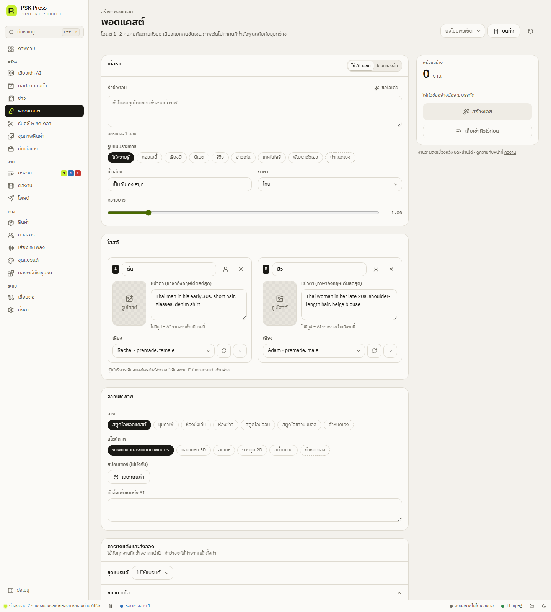

สร้างงาน
พอดแคสต์
โฮสต์ 1–2 คนคุยกันตามหัวข้อ เสียงแยกคนชัดเจน ภาพตัดไปหาคนที่กำลังพูดสลับกับมุมกว้าง


1. เนื้อหา
ให้ AI เขียน
- หัวข้อตอน — บรรทัดละ 1 ตอน มีปุ่ม ขอไอเดีย
- รูปแบบรายการ — ให้ความรู้, คอมเมดี้, เรื่องผี, ดีเบต, รีวิว, ข่าวเด่น, เทคโนโลยี, พัฒนาตัวเอง
- น้ำเสียง — พิมพ์เอง (ค่าเริ่มต้น “เป็นกันเอง สนุก”)
- ภาษา และ ความยาว (20 วินาที – 5 นาที ค่าเริ่มต้น 1 นาที)
ใช้บทของฉัน
ใส่ ชื่อตอน และ บทสนทนา ขึ้นต้นแต่ละบรรทัดด้วย A: / B: หรือชื่อโฮสต์ เช่น
ต้น: วันนี้เรามาคุยเรื่องการออมเงินกัน
มิว: เรื่องนี้ฉันพลาดมาเยอะเลยนะบรรทัดที่ไม่มีชื่อนำหน้าจะต่อเป็นคำพูดของคนก่อนหน้า
2. โฮสต์
ค่าเริ่มต้นมี 2 คน คือ “ต้น” และ “มิว” กด เพิ่มโฮสต์ ได้สูงสุด 2 คน แต่ละคนตั้ง:
- ชื่อ — หรือกด เลือกจากตัวละคร เพื่อดึงชื่อ รูป คำอธิบาย และเสียงจากคลังตัวละคร
- รูปโฮสต์ — ถ้าไม่มีรูป AI จะวาดจากคำอธิบาย
- หน้าตา (ภาษาอังกฤษได้ผลดีสุด) — เช่น Thai woman in her late 20s, shoulder-length hair, beige blouse
- เสียง — เลือกเสียงให้ต่างกัน ถ้าซ้ำกัน แอปจะเตือนว่าคนฟังจะแยกไม่ออก
ผู้ให้บริการเสียงของโฮสต์ใช้ค่าจากส่วน เสียง (ผู้ให้บริการ/ความเร็ว) ในการตกแต่งด้านล่าง
3. ฉากและภาพ
- ฉาก — สตูดิโอพอดแคสต์, มุมคาเฟ่, ห้องนั่งเล่น, ห้องข่าว, สตูดิโอนีออน, สตูดิโอขาวมินิมอล
- สไตล์ภาพ
- สปอนเซอร์ (ไม่บังคับ) → เลือกสินค้า — โฮสต์พูดถึงสินค้าตอนท้าย
- คำสั่งเพิ่มเติมถึง AI
ภาพที่ได้คือรูปพิธีกรแต่ละคน ภาพจะตัดไปหาคนที่กำลังพูด สลับกับภาพมุมกว้างที่มีทุกคน